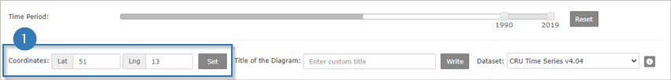
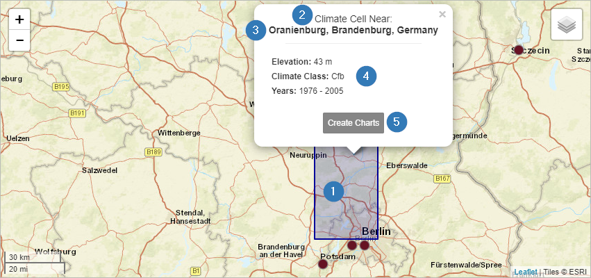
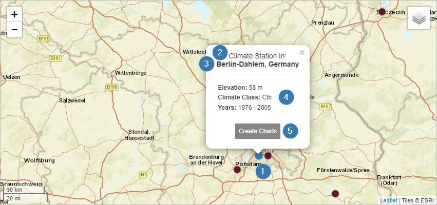
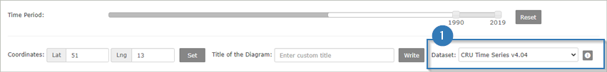
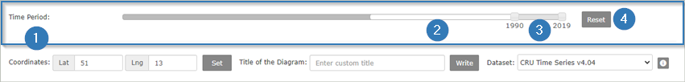

1.2 Select a Location
The selection of a location is quite easy and is done by clicking on a position in the map. Basically,
there are two types of data sets available - raster data (see 1.2.1) and station data (see 1.2.2).
In addition, it is also possible to select a position on the map by entering coordinates into the filter menu.
You can find it under the map tile (1). In this case a raster cell at this position is selected.

1.2.1 Raster Data
Once you selected a raster data set and clicked on a location, the corresponding raster cell is shown on the
map in blue (1). Within this grid cell the resulting climate diagrams are identical. Another indicator that you
are seeing raster instead of station data is the note "Climate Cell" at the top of the information popup (2).
This popup also contains information about the name of the place you have selected (3) as well as information
about the climate classes according to Köppen-Geiger, the altitude and the selected time period (4). With the
button "Create Charts" a diagram is created below the map (5).

1.2.2 Station Data
If you click on one of the brown marked dots on the map, a weather station is selected. Once activated the
color will change to blue (1).
You can also see that you have selected a station by the note "Climate Station" in the popup (2). This popup also
contains information about the name of the place you have selected (3) as well as information about the climate
classes according to Köppen-Geiger, the altitude and the selected time period (4). With the button "Create Charts"
a diagram is created below the map (5).

1.3 Filter Options
1.3.1 Data Sets
Overall, four data sets are available for the generation of climate charts.
The weather stations’ data set is part of the Global Historical Climatology Network (GHCN).
This data set is automatically selected whenever a user clicks on a station (cf. 1.2.2).

In addition, three different raster data sets can be used to generate climate diagrams. Select
one of these data sets before clicking on a location in the map. The selection menu is located beneath the map.
After you have chosen the preferred data set, you can select a location in the map.
You can find more information about the datasets in the menu "Datasets & Software".
1.3.2 Time Period
Climate diagrams are often generated for a period of at least 30 years. The web application
ClimateCharts.net offers the possibility to adapt this period according to your own requirements.
For this purpose, a slider for adjusting the period (1) is available. The Dark grey area shows the
maximum time period in which data (independent of the selected dataset) is available. The maximum
available time period for the selected data set (2) is shown in white. The length of this bar can
vary depending on the selected data set. The selected time period can be adjusted individually by moving
the upper and lower limits (3) of the light grey bar.

Only the data of the selected period is processed and displayed in the climate chart. The "Reset"
button is used to set the most recent time period with a length of 30 years (4).